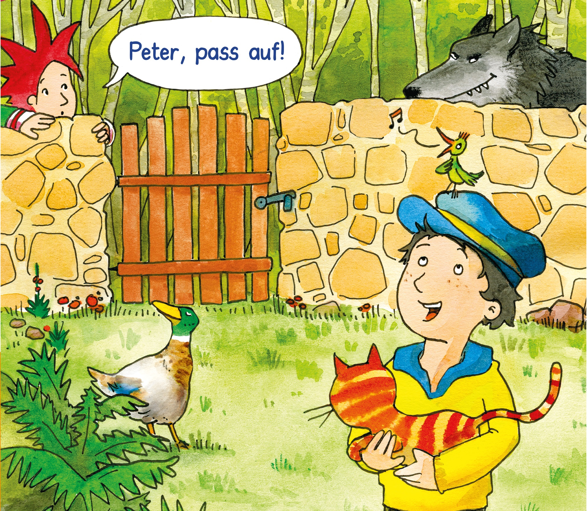

|

|
Hat Euch die Hörgeschichte gefallen?
Jeweils eine neue Hörgeschichte gibt es in der Praxiszeitschrift „PaMina“ für den Musikunterricht in der Grundschule.
Jetzt bestellen auf www.helbling.com!
Pamini, das Mädchen mit den roten Haaren, erforscht die Welt der Musik. Auf ihrer spannenden Reise lernt sie nicht nur verschiedene Instrumente und Musikstücke kennen, sie trifft auch Komponisten in längst vergangenen Zeiten oder landet mitten in einer Bandprobe. Welches Abenteuer wartet diesmal auf sie?